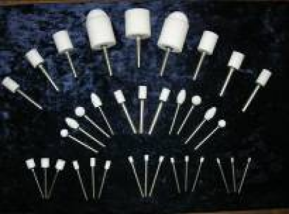
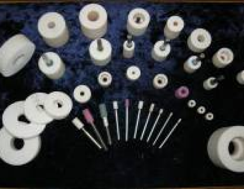

Подробнее
АБРАЗИВНЫЙ ИНСТРУМЕНТ

Назначение
Используется для обработки внутренних отверстий и наружных труднодоступных поверхностей металлических и неметаллических материалов (резины, пробки, кожи, войлока, мягких горных пород и др.), которые или совсем не могут обрабатываться обычными кругами или обрабатываются плохо. Изготавливается с применением нового экологичного выгорающего порообразователя.
Преимущества
Увеличение стойкости и режущей способности шлифовальных головок и кругов за счет применения новой легкоплавкой керамической связки, а также состава шихты и режимов изготовления инструмента;
Шлифовальные головки и круги «не осыпаются» и мало «засаливаются» в процессе работы;
Повышение качества обработки деталей (высокая чистота обработанной поверхности);
Уменьшение в 3-5 раз расхода инструмента за счет снижения его износа и уменьшения количества правок;
Увеличение в 2-5 раз производительности работы.
Характеристики
Производится абразивный шлифовальный инструмент в виде шлифовальных головок типа АW(ГЦ), ЕW, FW F2W (ГОСТ 2447-82) и кругов тип 1(ПП), тип 5 (ПВ) (ГОСТ 2424-83) диаметром от 3 до 63 мм, длиной от 6 до 40 мм, а также шлифовальные бруски.
Материал – электрокорунд легированный, кубический нитрид бора
Зернистость – 100 – 400 мкм
Твёрдость – М2, М3, СМ1, СМ2, С1, С2, СТ1, СТ2, СТ3
Структура – 7–15

Вернуться к разработкам